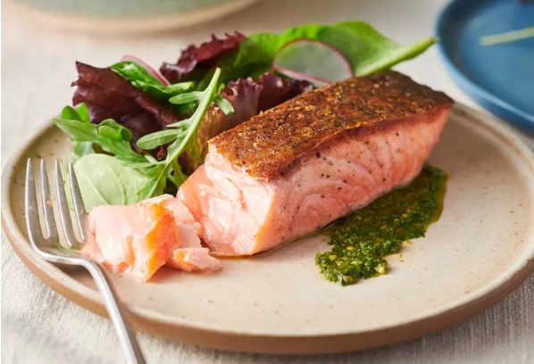

Crispy Pan-Seared Salmon Fillets

Description
How to simultaneously achieve extra-crunchy skin and perfectly tender fish.
(All credit to Serious Eats for
this content.)
Ingredients
- 4 skin-on salmon fillets, about 6 ounces (170g) each
- Kosher salt and freshly ground black pepper
- 2 tablespoons (30ml) vegetable, canola, or light olive oil
Directions
- Press salmon fillets between paper towels to dry surfaces thoroughly. Season on all sides with salt and pepper.
- In a large stainless, cast iron, or carbon steel skillet, heat oil over medium-high heat until shimmering.
Reduce heat to medium-low, then add a salmon fillet, skin side down. Press firmly in place for 10 seconds, using
the back of a flexible fish spatula, to prevent the skin from buckling. Add remaining fillets one at a time,
pressing each with spatula for 10 seconds, until all fillets are in the pan.
- Cook, pressing gently on back of fillets occasionally to ensure good contact with skin, until skin releases
easily from pan, about 4 minutes. If skin shows resistance when you attempt to lift a corner with spatula, allow
it to continue to cook until it lifts easily. Continue to cook until salmon registers 110°F (43°C) in the very
center for rare, 120°F (49°C) for medium-rare, or 130°F (54°C) for medium, 5 to 7 minutes total.
- Using spatula and a fork, flip salmon fillets and cook on second side for 15 seconds, then transfer to a paper
towel–lined plate to drain. Serve.
Home